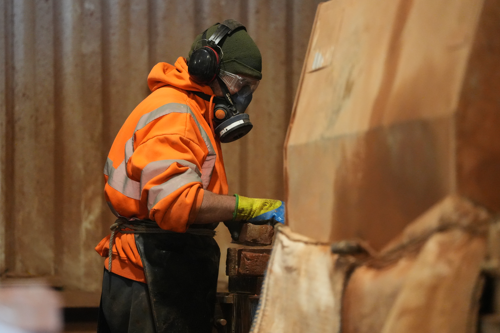

From Reclaimed Brick to Finished Slip
Every slip starts as a genuine reclaimed brick. Here's how we turn them into a premium wall finish.

Step 1Expertly Selected & Cut
Each brick is hand-selected from our extensive stock of genuine reclaimed bricks. Our team inspects every brick for quality before it's loaded onto the cutting line, ensuring only the best faces make it into our brick slips. Slips are precision-cut to 20–25mm thick, preserving the original weathered surface.
 Step 2
Step 2
Precision Production Line
Our dedicated cutting line processes each reclaimed brick with care and consistency. The original face of the brick is always preserved, retaining every bit of character, colour variation and patina that makes reclaimed materials so sought-after. No two slips are ever identical.